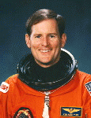

Lyndon B. Johnson Space Center
Houston, Texas 77058
|
National Aeronautics and Space Administration Lyndon B. Johnson Space Center Houston, Texas 77058 |
 |
Biographical Data |
||
Kenneth S. Reightler, Jr. (Captain, USN, Ret.)
NASA Astronaut (former)
PERSONAL DATA: Born March 24, 1951, in Patuxent River, Maryland, but considers Virginia Beach, Virginia, to be his hometown. Married to the former Maureen Ellen McHenry of Virginia Beach, Virginia. They have two grown children. Ken enjoys sailing, kayaking, and playing the guitar. His parents, Mr. & Mrs. Kenneth S. Reightler, Sr., reside in Virginia Beach. Maureen’s mother, Mrs. Jean W. McHenry, and father, Cdr. William H. McHenry, USN, are deceased.
EDUCATION: Graduated from Bayside High School, Virginia Beach, Virginia, in 1969; received a bachelor of science degree in aerospace engineering from United States Naval Academy in 1973, and master of science degrees, in 1984, in aeronautical engineering from the United States Naval Postgraduate School and in systems management from University of Southern California.
ORGANIZATIONS: Member, Society of Experimental Test Pilots (SETP); Lifetime Member, U.S. Naval Academy Alumni Association and the Association of Space Explorers; Associate Fellow, American Institute of Aeronautics and Astronautics (AIAA).
SPECIAL HONORS: Defense Superior Service Medal; Legion of Merit; Defense Meritorious Service Medal; Navy Commendation Medal; Navy Unit Commendation; Meritorious Unit Commendation; Armed Forces Expeditionary Medal; National Defense Service Medal; NASA Exceptional Service Medal; two NASA Space Flight Medals; Space Station Program Office Program Manager’s Commendation; Johnson Space Center Certificate of Commendation; Numerous NASA Group Achievement Awards; INTELSAT EVA Recovery Team Award. Distinguished graduate, U.S. Naval Academy and U.S. Naval Test Pilot School. Absolute world altitude record for Class P aero-spacecraft. Mac Short Award in Aviation from U.S. Naval Academy (1973). Inducted into the Virginia Aviation Hall of Fame (1997). 1997 Technical Administrator of the Year; National Management Association’s “President’s Award”; Lockheed Martin COMET award for communications excellence.
EXPERIENCE: Reightler graduated from the United States Naval Academy in 1973, and was designated a naval aviator in August 1974 at Corpus Christi, Texas. After replacement pilot training in the P-3C airplane, he reported to Patrol Squadron Sixteen in Jacksonville, Florida, serving as both a mission commander and patrol plane commander. He made deployments to Keflavik, Iceland, and to Sigonella, Sicily. Following jet transition training, Reightler attended the United States Naval Test Pilot School at Patuxent River, Maryland. Upon graduation in 1978, he remained at the Naval Air Test Center (NATC) where he served as test pilot and project officer for a variety of flight test programs involving the P-3, S-3, and T-39 airplanes. He later returned to the Test Pilot School, serving as a flight test instructor and safety officer flying the P-3, T-2, OV-1, T-39, and TA-7 airplanes. In June 1981 Reightler was assigned to the USS Dwight D. Eisenhower (CVN-69) as communications department head and carrier on-board delivery pilot, making two deployments to the Mediterranean Sea. Selected for postgraduate education, he attended the Naval Postgraduate School in Monterey, California. Redesignateded an aerospace engineering duty officer (AEDO) he was sent to transition training for the F/A-18 airplane with Strike Fighter Squadron 125 (VFA-125) at Naval Air Station Lemoore, California. He then reported for duty at the United States Naval Test Pilot School in March 1985, serving as the chief flight instructor until his selection for the astronaut program.
He has logged over 5,000 hours flying time in over 60 different types of aircraft.
NASA EXPERIENCE: Selected by NASA in June 1987, Reightler completed a year of astronaut candidate training and was designated an astronaut in August 1988.
From September 12-18, 1991, he was the pilot on the crew of STS-48. This was the first Space Shuttle flight in support of "Mission to Planet Earth." During the five-day mission, the crew aboard the Space Shuttle Discovery successfully deployed the Upper Atmosphere Research Satellite (UARS), designed to provide scientists with their first complete data set on the upper atmosphere’s chemistry, winds and energy inputs. The crew also conducted numerous secondary experiments ranging from growing protein crystals, to studying how fluids and structures react in weightlessness. After 81 orbits of the Earth, STS-48 Discovery landed at Edwards Air Force Base, California.
Reightler next served as pilot on STS-60, the first joint U.S./Russian Space Shuttle Mission. Launching from the Kennedy Space Center on February 3, 1994, STS-60 was the first flight of the Wake Shield Facility (WSF-1) and the second flight of the Space Habitation Module (Spacehab-2). During the eight-day flight, the crew of Discovery, including Russian cosmonaut Sergei Krikalev, conducted a wide variety of biological, materials science, earth observation, and life science experiments. Following 130 orbits of the Earth, STS-60 landed at Kennedy Space Center, Florida, on February 11, 1994.
With the completion of his second mission, Reightler logged over 327 hours in space.
His technical assignments have included: Chief of the Astronaut Office Space Station Branch; Chief of the Astronaut Office Mission Support Branch; Lead Spacecraft Communicator (CAPCOM); Lead Astronaut for flight software development and computer systems; Flight Crew Operations Directorate representative to the Shuttle Program Requirements Control Board; Weather Coordinator for Space Shuttle launches and landings; Astronaut Office representative in the areas of ascent, entry, and aborts.
In 1995, Reightler retired from the U.S. Navy with the rank of Captain (O-6) and joined Lockheed Martin in Houston Texas. He was responsible for managing engineering, science, communications, and mission operations programs providing technical services to NASA. In 1996 he was promoted to Vice President. In 2001 he was promoted to Senior Vice President, Lockheed Martin Space Operations (LMSO), responsible for the day-to-day operations of the company. In 2004 he was promoted to President, LMSO in Greenbelt, Maryland. Following the win of the Orion/Crew Exploration Vehicle contract in 2006, Reightler joined Lockheed Martin Space Systems Company as Vice President, NASA Program Integration.
AUGUST 2008
This is the only version available from NASA. Updates must be sought direct from the above named individual.
{kind=link}